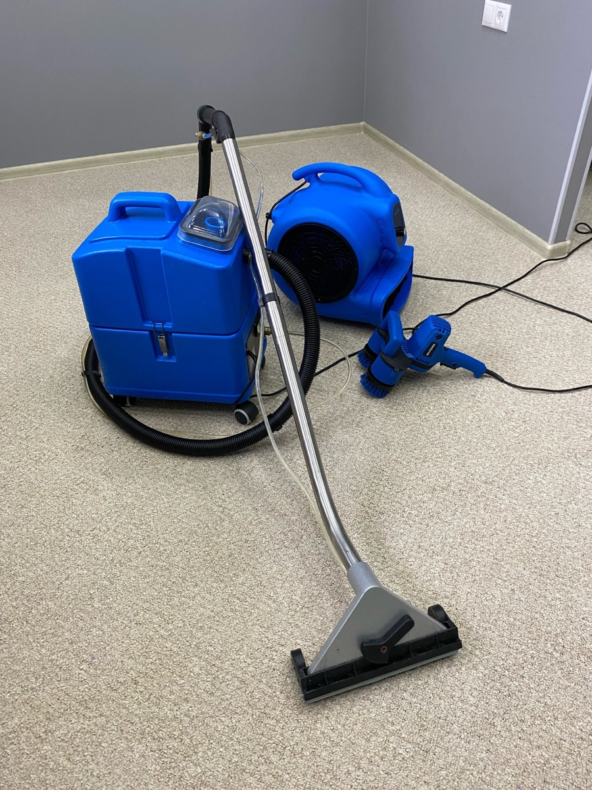

Химчистка мягкой мебели
Чистая мебель.
Снова уютно.
Чистим диваны, матрасы и ковры. По фото подскажем, что можно сделать с обивкой и сколько будет стоить работа.
Что чистим
Цены в макете приведены для примера.


Предварительная оценка
Сколько стоит
химчистка?
Выбери мебель, укажи количество и степень загрязнения. Точную стоимость можно определить по фото.
Наши работы
Один диван.
Два кадра.
На первом фото видны пятна на сиденье. Передвинь ползунок, чтобы сравнить обивку до и после чистки.

 ДоПосле
ДоПосле

Как проходит чистка
Осматриваем обивку
Учитываем материал и характер загрязнений.
Обрабатываем пятна
Подбираем состав под ткань и обрабатываем загрязнённые участки.
Чистим экстрактором
Подаём раствор на ткань и собираем его вместе с загрязнениями.
Частые вопросы
Какие фото нужны для оценки?
Сделай общий снимок мебели и сфотографируй заметные пятна крупным планом при хорошем свете.
Сколько сохнет мебель?
Время зависит от ткани, влажности и проветривания. После чистки мастер подскажет, когда мебелью можно пользоваться.
Можно ли убрать любое пятно?
Результат зависит от ткани, состава пятна, его давности и предыдущих попыток чистки.
Чем чистите мебель?
Для влажной чистки используем экстрактор. Средство подбираем после осмотра обивки.
Оценка по фото
Покажи, что нужно почистить
Приложи общий снимок и крупный план пятна.